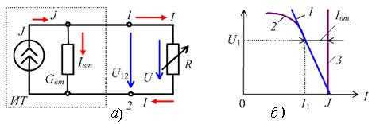
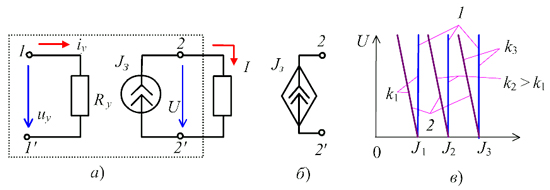

Источник электрического тока - это источник электрической энергии, характеризующийся электрическим током J в нем и внутренней проводимостью Gвт. На схеме замещения (рис. 1.12, а) независимый источник тока (ИТ) представляют в виде идеального ИТ (с бесконечно большим сопротивлением) с заданным током J и параллельно с ним соединенного элемента (резистора) с внутренней проводимостью Gвт, равной 1/Rвт и, как правило, значительно меньшей проводимости приемника G = 1/ R, т. е. Gвт<< G (Rвт >> R). В качестве примера можно привести схему замещения с ИТ выходной цепи транзисторного усилительного каскада с общим эмиттером. Пренебрегая сопротивлением проводов и принимая U12 = U, можно записать
 Рис. 1.12 Из соотношения (1.21) получим уравнение внешней характеристики ИТ, т. е. I = f(U):
Если проводимость ИТ значительно меньше проводимости приемника, т. е. Gвт<< G (Rвт >> R), то при одном и том же напряжении U = U12 ток Iвт << J; при этом источник тока находится в режиме, близком к режиму короткого замыкания (КЗ). Значением тока Iвт = GвтU можно пренебречь и ветвь с элементом Gвт можно из схемы (см. рис. 1.12, а) исключить. Такой источник энергии, обозначаемый на схемах в виде кружочка с двойной стрелкой с разрывом внутри (Rвт = Ґ) с символом J, называют идеальным источником тока (источником с заданным током J). Ток I = J идеального ИТ не зависит от сопротивления R приемника, а потому его внешняя характеристика - прямая, параллельная оси ординат (линия 3, рис.1.12, б). Для идеального ИТ (Rвт = Ґ) исключается режим ХХ (I = 0).  Рис. 1.13 В зависимых ИТ (рис. 1.13, а) предусматривают две пары выводов: 1-1ў - управляющие, 2-2ў - собственно ИТ, и в которых ток J = kuу (ИТУН - источник тока, управляемый напряжением) или ток J = kiу (ИТУТ - источник тока, управляемый током), где uу и iу - управляющие напряжение и ток; k - коэффициент пропорциональности. |
|||||